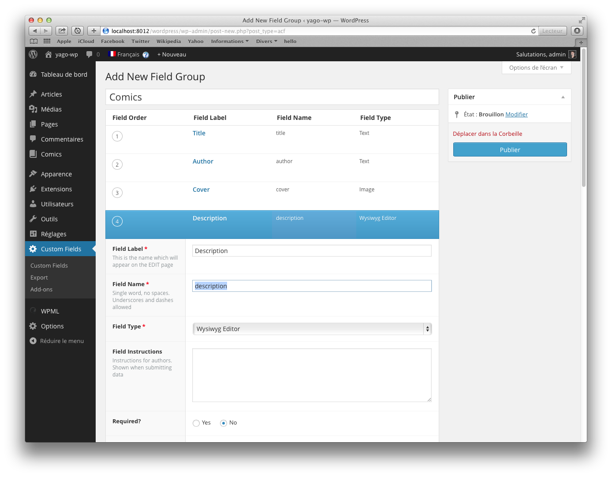
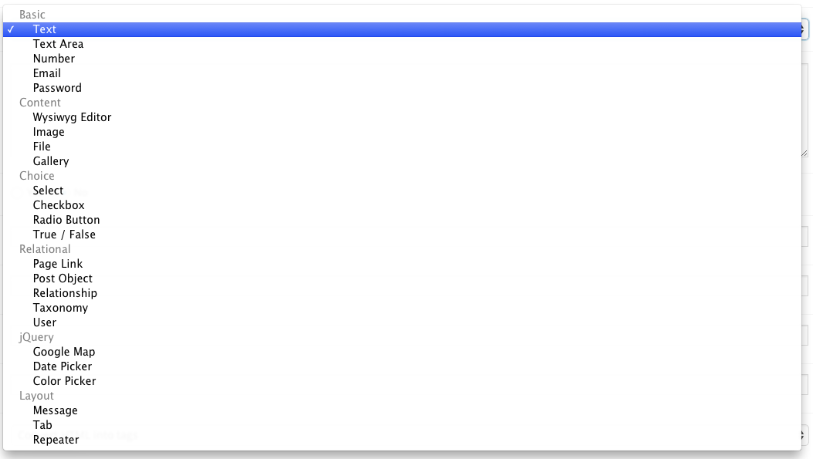
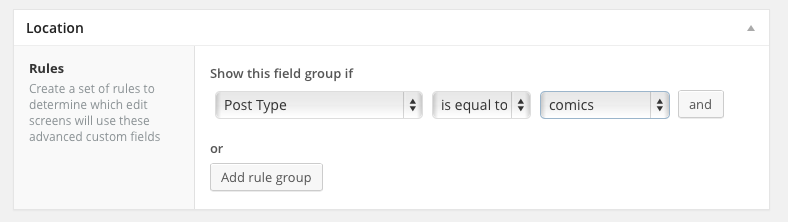
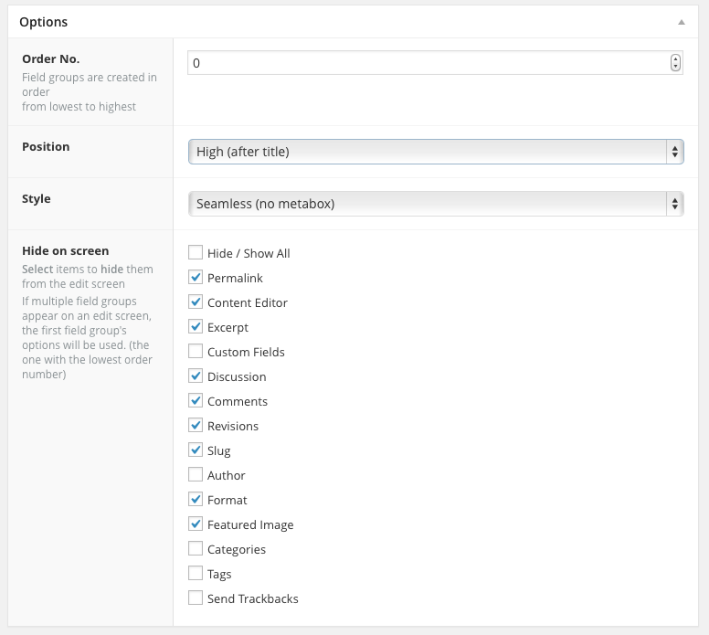
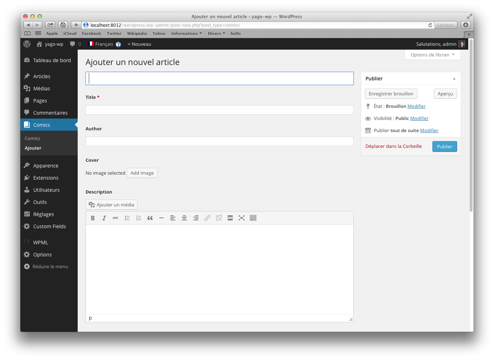
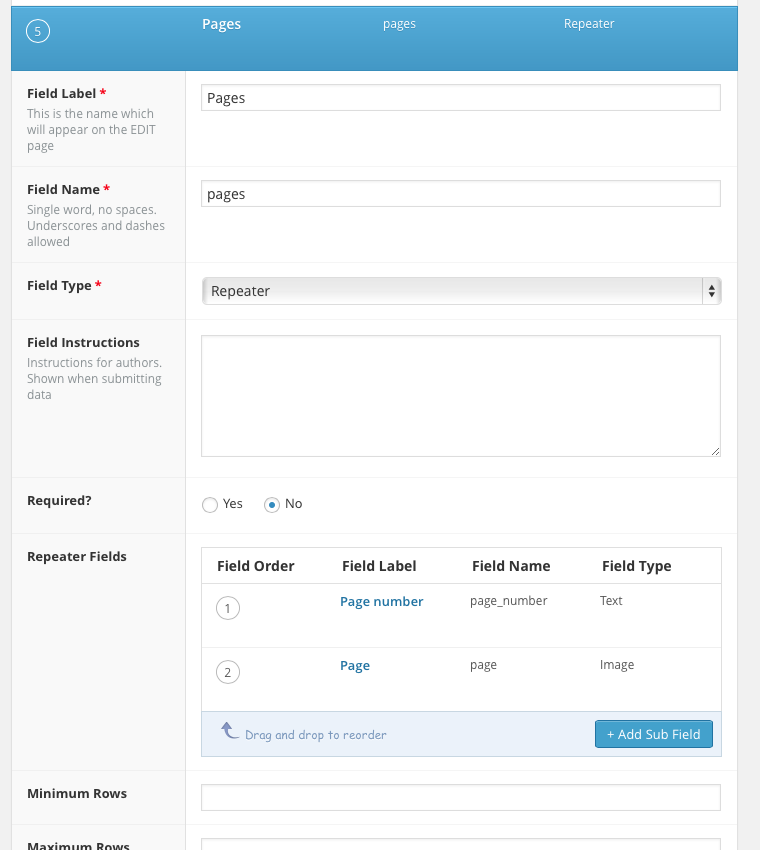
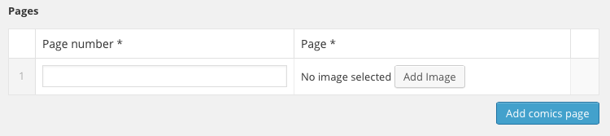
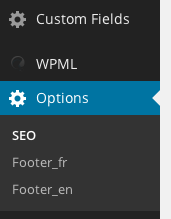
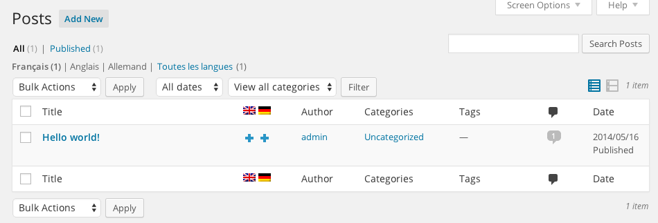
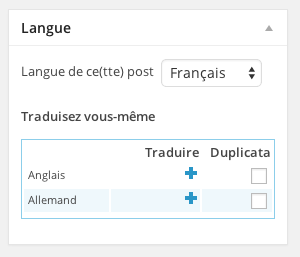

Perfect for :
- Blog
- Portfolio
- One page website
- ...
- Any kind of medium size website
Not recommended for :
- E-commerce
- Social Network
- Real estate platform
- ...
-
Any kind of huge and complex website

In fact, you probably already made some magic tricks with WP, but at the end...

We have move to
the next level
1. Post type
in your function.php :
add_action( 'init', 'create_comics_post_type' );
function create_comics_post_type() {
$args = array(
'public' => true,
'label' => 'Comics',
'menu_icon' => 'dashicons-book'
);
register_post_type( 'comics', $args );
}
To template it :
archive-{post_type}.php
If your custom post type were 'product', and/or query_var = "product", WordPress would look for archive-product.php to display the archive of posts.
single-{post_type}.php
If your custom post type were 'product', and/or query_var = "product", WordPress would look for single-product.php to display the single or permalink of the post.
2. ACF
(Advanced Custom Fields)
Field Group
ACF uses field groups to attach fields to posts. Each field group contains a title, fields, location rules and visual settings.
Fields
Field type
Location
Options
Result
To call it in the template :
<?php the_field('name_of_custom_field'); ?>
Repeater Field
The Repeater field acts as a table of data where you can define the columns (sub fields) and add infinite rows. Any type of field can be added as a sub field which gives you the potential to create very flexible templates.
In group field
In post type
To call it in the template :
<?php while( have_rows('pages') ): the_row(); ?>
<?php the_sub_field('page_number'); ?>
![<?php echo get_sub_field('page')['alt']; ?>](<?php echo get_sub_field('page')['url']; ?>) <?php endwhile; ?>
<?php endwhile; ?>
Options page
The "options page" addon creates a new menu item called "Options" which can hold advanced custom field groups (just like any other edit page). You can also register multiple options pages

To call it in the template :
<?php the_field('my_custom_option', 'option'); ?>
3. WPML
(WordPress Multilingual Plugin)
This is the less worse solution for a mutlilingual website, but you have to duplicate all translated content...
Create translation from article list :
Create translation from article :
To print it nicely in the template :
function language_selector_flags(){
if (function_exists('icl_get_languages')) {
$languages = icl_get_languages('skip_missing=0&order=desc');
$langs = '';
if(!empty($languages) && count($languages) > 1){
$index = 0;
foreach($languages as $l){
$class_pos = $index === 0 ? 'first': 'last';
$index++;
$active = $l['active'] ? ' active' : NULL;
$langs .= '' . strtoupper ($l['language_code']). ' ';
}
$output = $langs;
}
return $output;
}
}
<?php echo language_selector_flags(); ?>
4. Barley
So, with Barley we can :
- Edit title
- Edit classic content
- Edit all custom fields and advanced custom fields
- Adding some pictures, video, embed thing,...
- Add a new page, article, custom post type,...
- ...
- Doing all client stuff from front !
Conclusion
Without pushing Wordpress too far, we can build user/editor friendly and content type oriented website !